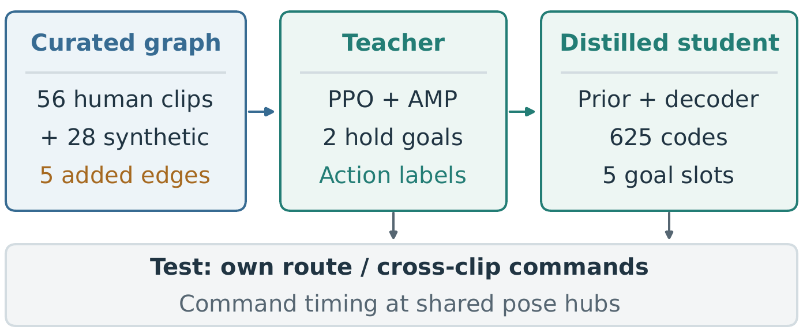
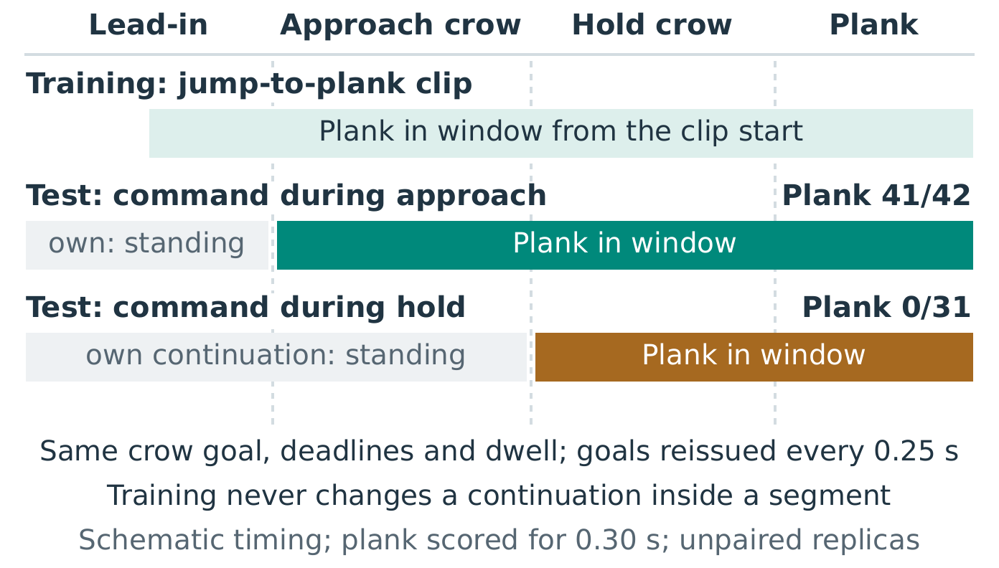
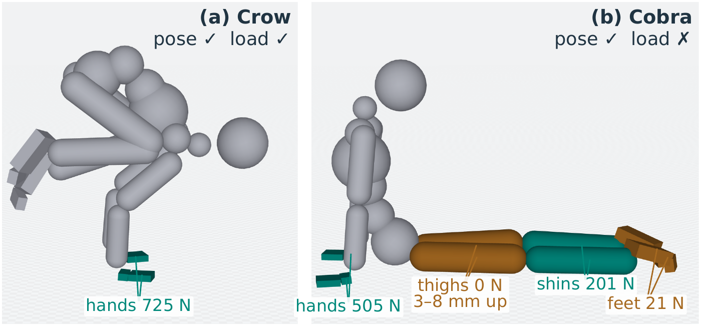
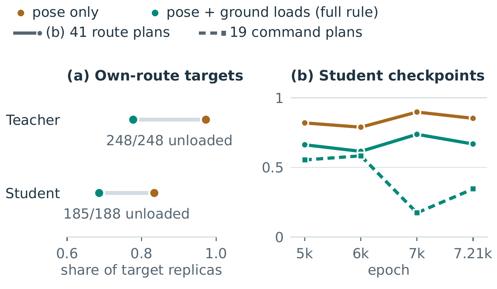

Pose Is Not Support Do Learned Whole-Body Controllers Follow Revised Support Commands?
San Francisco
Workshop submission · CoRL 2026 Workshop on Open Problems in Contact-Rich Loco-Manipulation
Abstract
Contact-rich loco-manipulation requires whole-body controllers to change which limbs bear weight when a planner or user revises a goal. Evaluating familiar motion sequences by pose accuracy does not establish whether a controller follows such revisions or loads the requested supports. We examine both properties in a simulated yoga testbed with human arm balances, inversions, and single-leg balances, supplemented by five synthesized transitions. A goal-conditioned PPO teacher executes all five transitions after arrivals through human clips. A student distilled to accept partial pose-and-contact goals shows a strong timing dependence: crow-to-plank succeeds on 41 of 42 replicas when the continuation appears as the crow becomes the active goal, but on none of 31 when it appears during the crow hold. Its training schedule contains no such within-hold revision. Separately, pose-only scoring exceeds the teacher's own-route pose-and-load success by about 20 percentage points, entirely through failures of requested-support loading. Across student checkpoints, own-route scores peak while command success regresses. These results show the value of evaluating command timing and support realization alongside familiar-route performance, and motivate training with revised continuations and explicit support-attainment objectives.
Supplementary video
4:50, silent, 1080p. Grey is the simulated policy; green, drawn beside it, is what it is asked to do. Captions give rates over replicas of the same plan. Chapters:
Testbed and policies
The capture contains 56 yoga clips of one performer in 37 pose families: arm balances, inversions, single-leg balances, and connective poses. Each clip performs one pose as a round trip from standing, so no clip moves between two poses. We annotate each clip as a sequence of holds whose contact configurations form a graph, repair the references so that labeled supports touch the floor on a body rebuilt from the performer's skeleton, and synthesize five transitions that no clip contains with MPPI in the training simulator: crow to handstand and back, crow to plank, and crow and handstand to chaturanga.
A goal-conditioned PPO teacher reads two fully specified hold goals. A student, distilled from it with online teacher labels, reads five goal slots with partial poses and explicit contact requests. Both are tested on each clip's own route and on continuations commanded from other clips at the poses they share.

Findings
The teacher follows revised support commands
After arriving at a shared pose through a human clip, the teacher executes all five synthesized transitions with source and destination satisfied on every replica, and completes the chain crow, handstand, crow, chaturanga. A target succeeds when the six-body pose is within 0.15 m, every requested ground zone carries at least 5 N on 90% of the hold frames, and no unrequested zone carries 3% of body weight on 20% of them. Switch shows the new continuation once the hub's hold has begun; approach shows it when the hub becomes the active goal.
| Destination after a human arrival | Teacher, switch | Teacher, approach | Student, switch | Student, approach |
|---|---|---|---|---|
| Crow → handstand (press) | 31/31 | 42/42 | 31/31 | 42/42 |
| Crow → plank (jump) | 31/31 | 42/42 | 0/31 | 41/42 |
| Crow → chaturanga | 31/31 | 42/42 | 0/31 | 0/42 |
| Handstand → crow | 31/31 | 42/42 | 10/31 | 18/42 |
| Handstand → chaturanga | 31/31 | 42/42 | 27/31 | 37/42 |
| Side-crow squat → side crow (within family) | 31/31 | 42/42 | 0/31 | 40/42 |
| Mean target success by plan group | ||||
| New-edge hubs and controls | 1.000 | 1.000 | .786 | .876 |
| Multi-hop chains | .933 | .952 | .561 | .615 |
| Flows joined at standing | .836 | .513 | .305 | .310 |
| Within-family alternates | .747 | .571 | .297 | .279 |
Commands from another clip (Table II of the paper). All runs reissue goals every 0.25 s.
The student's response depends on when the command arrives
With goal poses, deadlines and dwell held fixed, the student's jump from crow to plank succeeds on 41 of 42 replicas when the plank appears as the crow becomes the active goal, and on none of 31 when it appears during the crow hold: it stands up instead, the human crow clip's own exit. Commands during a hold are not ignored in general; the press, commanded during the same hold, succeeds on 31 of 31.
In training, a continuation never changes while its segment is in progress, and the student's 2 s of pose history and contact events could identify the playing clip and its usual continuation, a possible source of causal confusion.

Pose is not support
On its own routes, the teacher passes the pose criterion on .972 of target replicas but the full rule on .777. All 248 replicas in the gap fail a requested-support load condition, in eight families: the thighs in cobra, the hands in the forearm stand, the trunk in plow and shoulderstand, the head in Koundinya. In every fully recorded replica these supports stay within 2 cm of the floor, so a touch test passes them too; only load separates them. The teacher's reward penalizes load on zones that should be free but gives requested-support attainment zero weight.

Own-route scores miss a command regression

Between two later student checkpoints, own-route passing plans rise from 33 to 39 by pose and from 25 to 32 with support checks on the same rollouts, while mean success on 19 command plans falls from .583 to .173. Own-route scores, even support-aware, did not predict command following; support-scored command probes can complement them when selecting checkpoints.
Gallery


BibTeX
@misc{kumar2026pose,
title = {Pose Is Not Support: Do Learned Whole-Body Controllers Follow
Revised Support Commands?},
author = {Kumar, Visak},
year = {2026},
howpublished = {CoRL 2026 Workshop on Open Problems in Contact-Rich
Loco-Manipulation (submission)},
url = {https://visakk.github.io/pose-is-not-support/}
}